Remote Module Importing¶
xlSlim supports importing modules from remote locations, including popular git repository providers. This functionality offers an easy way to release code to end users. Developers can push code updates to a git repository and end users can import the latest code without requiring any files to be copied to their computers.
GitHub¶
Python modules can be imported from GitHub repositories. You will need to know the GitHub user name, the repo name, the branch (usually main or master) and the module name.
We will use this module, hello_github.py, in the xlslim-code-samples repo to illustrate the process:
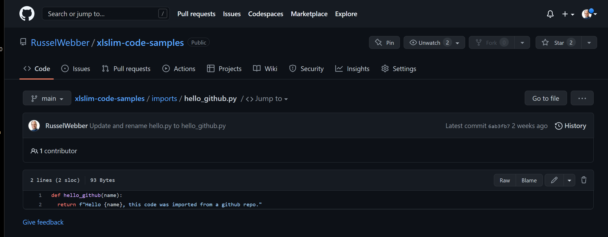{kind=link}
The GitHub user name is RusselWebber, the repo name is xlslim-code-samples, the branch is main and the module name is hello_github.py. Notice that the hello_github.py module is in the imports package, so we will import imports.hello_github.py. If the imports folder was not a package (that is did not have an __init__.py file) we would not be able to import from the folder.
The regular RegisterPyModule() function is used to import and register the module. However, we pass the Github details into the function, not the usual local file path. The Github details are passed as a key=value string with each pair of keys and values seperated by ;
Open a new Excel sheet and register the module using this function:
=RegisterPyModule("httpimport.github_repo;username=RusselWebber;repo=xlslim-code-samples;ref=main;module=imports.hello_github")
Note
The ref argument refers to either a branch name or a commit hash. This is very powerful as you can import specific versions of code into Excel, testing new functionality or rolling back a bad release.
The module is imported just like a local Python module:
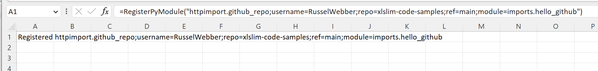{kind=link}
And the function can be called as usual:
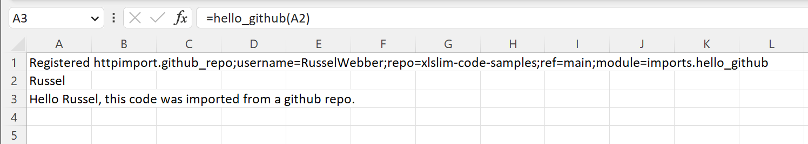{kind=link}
Bitbucket¶
Python modules may be imported from Bitbucket in a very similar way. You will need to know the Bitbucket workspace name, the repo name, the branch (usually main or master) and the module name.
We will use this module, hello_bitbucket.py, in the xlslim-samples repo to illustrate the process:
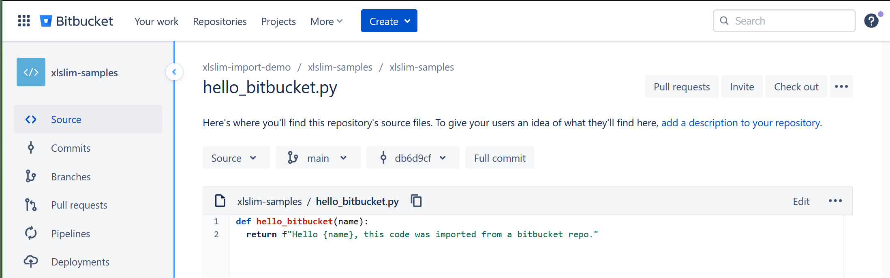{kind=link}
The Bitbucket workspace name is xlslim-import-demo, the repo name is xlslim-samples, the branch is main and the module name is hello_bitbucket.py.
The regular RegisterPyModule() function is used to import and register the module. However, we pass the Bitbucket details into the function, not the usual local file path. The Bitbucket details are passed as a key=value string with each pair of keys and values seperated by ;
Open a new Excel sheet and register the module using this function:
=RegisterPyModule("httpimport.bitbucket_repo;workspace=xlslim-import-demo;repo=xlslim-samples;ref=main;module=hello_bitbucket")
Note
The ref argument refers to either a branch name or a commit hash. This is very powerful as you can import specific versions of code into Excel, testing new functionality or rolling back a bad release.
The module is imported just like a local Python module:
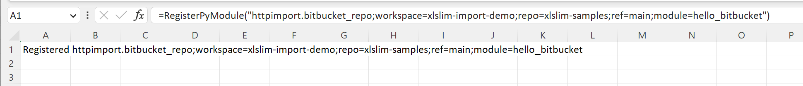{kind=link}
And the function can be called as usual:
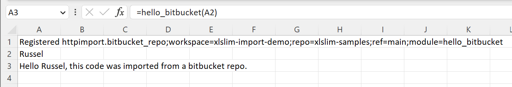{kind=link}
HTTPS Server¶
Python modules may also be imported directly from https servers. Gists provide a good example of how this can be used. The same technique can be used for any server as long as the module is available as a unique URL.
Gists¶
GitHub provides the ability to share coded snippets using Gists that are miniature git repositories.
This little gist defines the hello_gist() function in the hello_gist.py module:
def hello_gist(name):
return f"Hello {name}, this code was imported from a gist."
To import code from a Gist you need the address for the raw source code. You can get this by clicking on the “Raw” button.
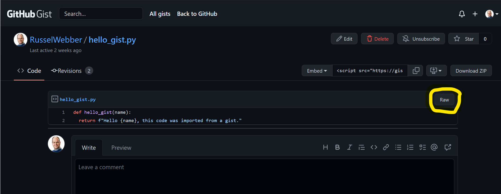{kind=link}
This will open a new URL with just the raw code:
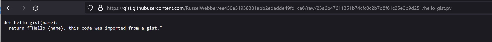{kind=link}
From the URL you need everything up to the module name, so https://gist.githubusercontent.com/RusselWebber/ee450e51938381abb2edadde49fd1ca6/raw/23a6b47611351b74cfc0c2b7d8f61c25e0b9d251
Then the function to register the module is
=RegisterPyModule("httpimport.remote_repo;url=https://gist.githubusercontent.com/RusselWebber/ee450e51938381abb2edadde49fd1ca6/raw/23a6b47611351b74cfc0c2b7d8f61c25e0b9d251;module=hello_gist")
Note
This example uses httpimport.remote_repo which is not specific to Gists and will work with any URL that references a Python module or ZIP archive (see below).
ZIP Archive¶
Python has long had the ability to import modules and packages from ZIP archives. The functionality was introduced back in 2001 with PEP273. Python code archives can be created using pyzipfile. This creates the ability to use xlSlim’s remote importing functionality with ZIP archives hosted on HTTPS servers.
The ZIP archive, hello_archive.zip, contains two files: hello_archive_one.py and hello_archive_two.py
def hello_archive_one(name):
return f"Hello {name}, this code was imported from a zip file on an https server."
def hello_archive_two(name):
return f"Hello {name}, this code was imported from a zip file on an https server."
The ZIP archive is available at https://raw.githubusercontent.com/RusselWebber/xlslim-code-samples/main/imports/hello_archive.zip
Python modules within the ZIP archive can be registered as follows:
=RegisterPyModule("httpimport.remote_repo;url=https://raw.githubusercontent.com/RusselWebber/xlslim-code-samples/main/imports/hello_archive.zip;module=hello_archive_one")
=RegisterPyModule("httpimport.remote_repo;url=https://raw.githubusercontent.com/RusselWebber/xlslim-code-samples/main/imports/hello_archive.zip;module=hello_archive_two")
The two functions are then available to use in Excel:
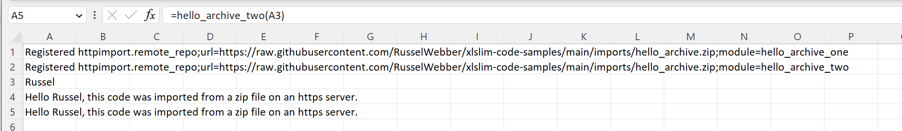{kind=link}
Profiles¶
Under the hood xlSlim uses the Python project httpimport to do remote importing. httpimport allows profiles to be used to set various network options such as proxies and authentication. Full details are in the httpimport documentation.
In xlSlim profiles can be provided as part of the RegisterPyModule() call:
[DEFAULT]
allow-plaintext: yes ; allows the use of HTTP addresses - NOT advised for external addresses
proxy-url: https://127.0.0.1:8080 ; values must not be in quotes (')
headers:
Authorization: token <token> ; Github Tokens look like ghp_<gibberish> and can be issued here: https://github.com/settings/tokens/new
A cell containing the profile details can be passed:
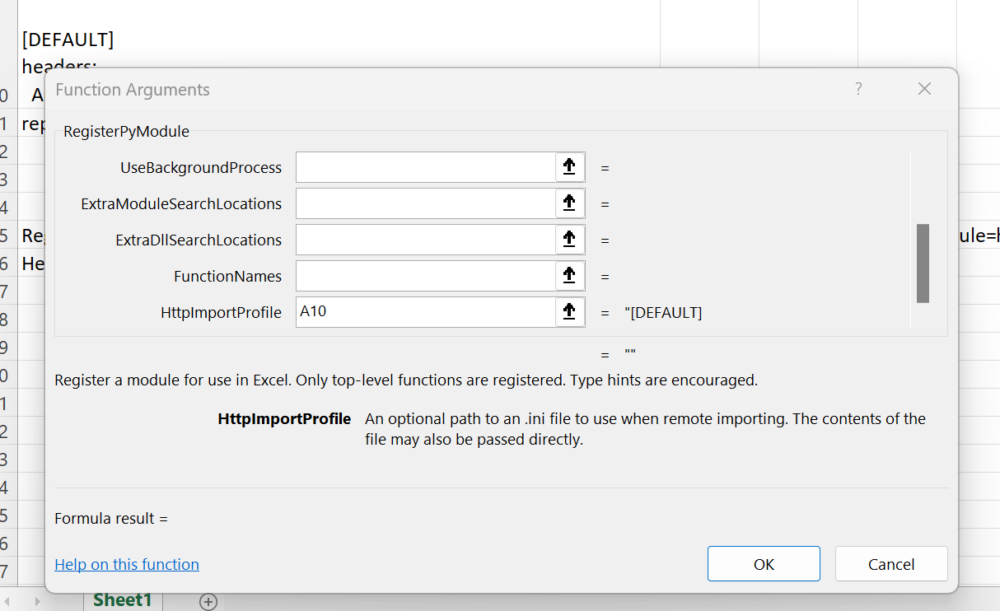{kind=link}
Or alternatively the location of an ini file can be passed:
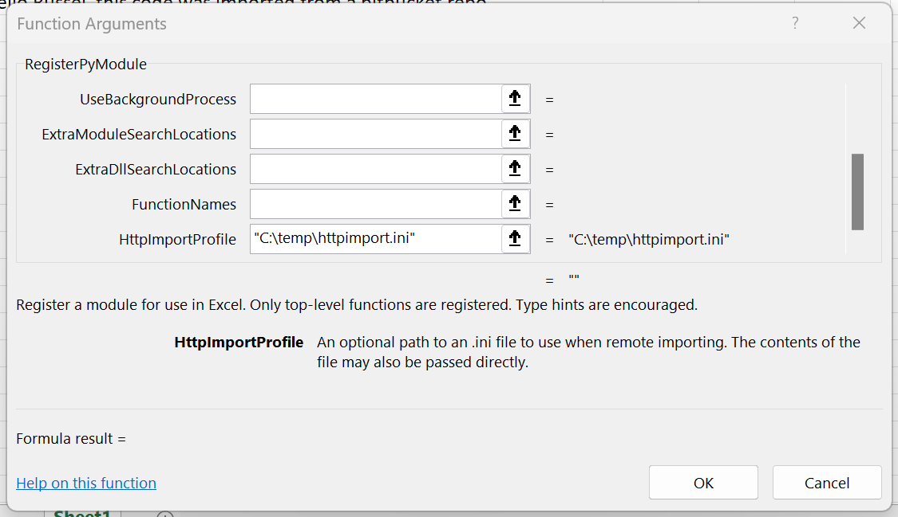{kind=link}
The DEFAULT profile will be used for all remote imports. Named profiles can also be used, for example:
[github]
headers:
Authorization: token <token> ; Github Tokens look like ghp_<gibberish> and can be issued here: https://github.com/settings/tokens/new
The github profile can then be used so the authorization token is only sent to GitHub servers. The profile can be part of the httpimport key values:
=RegisterPyModule("httpimport.github_repo;username=RusselWebber;repo=xlslim-code-samples;ref=main;module=imports.hello_github;profile=github")
A final alternative for profiles is to use an .ini file located in the same directory as the xlSlim64.xll, this is usually C:\Users\<username>\AppData\Roaming\Microsoft\AddIns\xlSlim If the .ini file is named httpimport.ini it will be detected and used automatically.